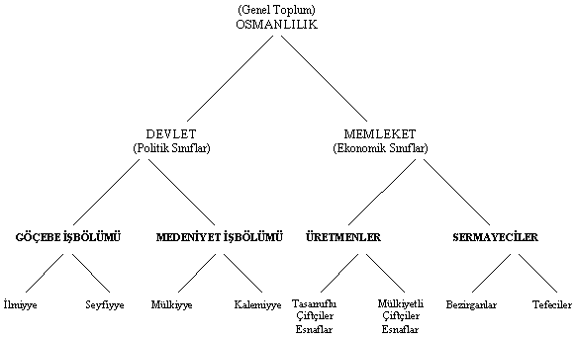
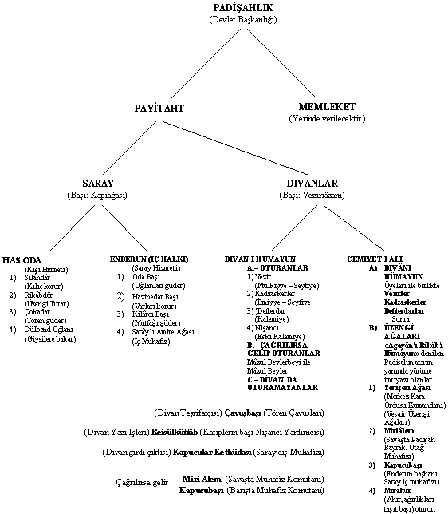
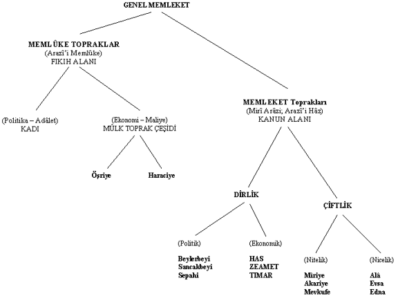

Osmanlı topluluğunun Üstyapısı, hem olağanüstü basit, hem olağanüstü karmaşık bir düzendir.
Her canlı ve cansız olay gibi, Osmanlılık da boyuna değişerek geliştiği için, olağanüstü karmaşık, hatta anlaşılmaz bir kargaşalık gibi görünür. Çünkü, Osmanlı Padişahlığı, bütün benzerleri gibi"Hüdayinabit"tir. Dünkü, bugünkü, hatta yarınki Sosyal ve Politik biçimler, çoğu içiçe, yan yana, birbirlerini hem tutarak hem tekmeleyerek var olurlar.
Ancak, bu Osmanlı Padişahlığı, koskoca Antika Tarih içinde, batıp çıkmış bütün benzerleri gibi, başlı başına bir "Zât"tır, bir "Entite", bir "Tümlük", bir "Kişilik"tir. Bağımlılığında bağımsız bir Organizma'dır. Doğduğu günden batıncaya dek, bütün başdöndürücü değişiklikleri, altüstlükleri içinde, ayrı tip bir tür hayvan gibi nasıl idiyse öyle kalmıştır. Onun için, Osmanlı Padişahlığı denilen Tarihcil yaratık, Çokluğu içinde Birliği ile, Karmaşıklığı içindeBasitliği ile yakalanabilir. Bu "yakalayışı" bize Osmanlı Padişahlığının Sosyal ve Politik ŞEMALARI sağlıyabilir. Her "Şema" gibi, Osmanlı Padişahlığının şemaları da, kısa ve kestirme olmak için, canlı ayrıntılarından hayli kopuk olur.
O yüzden şemalar çorak, hâttâ kısır düşebilirler. Gene de onlarsız olunamaz. Pek öldürücü tecride kaymamak şartıyla, gerçekliğe hiçbir şey katmamak, gerçeklikten her ana karakteri atmamak şartıyla, varlığın kalın çizilerini Şemalar verirler.
Osmanlı Tarihinin üstyapı RUHU önyargı ile Şemalaştırılamaz. O zorlama olur ve gerçekliğin şemasını değil, LunaPark aynalarındaki sapıttırmalarını verir. Olduğu gibi izlenen Osmanlı Tarihinin Ruhunda, birbirini tümlendiren iki çelişik-ilişik şema bulunur:
1. OSMANLILIK: Soyut Sosyal Şemadır.
2. PADİŞAHLIK: Somut Politik Şemadır.
Bu iki gerçeklik şemasını iki başka Ayrım olarak ele alabiliriz.
Osmanlılık denince, o daha çok soyut bir kavram'dır. Genel ilişki ve çelişkileri sezindirir. Sanki ortada elle tutulur, pratik bir kişi ve kişilik yoktur. Tarihin tümü içinde teorik bir Sosyal soyutluk vardır.
Padişahlık denince, o daha çok somut bir nesne'dir. Özel ilişki ve çelişkileri sezindirir. Ortada düpedüz elle tutulur, Pratik bir Kişi ve Kişilik vardır. Osmanlılığın tümü içinde pratik bir Politik somutluk yürütür.
Ne demek istediğimizi, daha doğrusu neden öyle dediğimizi iki Şema Ayrımında özetlemeye çalışalım.
Osmanlılığın Soyut SOSYAL şeması çizilirken ve doğru çizebilmek için, kuru bir harita veya plânyapmak yetmez. Alışılmadık alandayız. Kimi formüller, ya da harita ve plân işaretleri, termlerişaşırtıcı, gelişigüzelmişce yanıltıcı olabilir.
Şaşırma ve yanılmaları bir kerteye dek önleyebilmek için, kimi kısa açıklamalar yapılmak ister. Onun için, bir tek ayrım olan Osmanlılığın Sosyal Şeması çevresinde üç büyük başlıkla kaplanmış karakteristikler yapılabilir:
A) Osmanlılığın SINIF'ları ve NÜFUS'ları;
B) Devlet Sınıfları;
C) Memleket Nüfusları..
Osmanlı Topluluğunun insanları, Osmanlıların kendilerince, Kapitalizmdekilere yampiri kaçan bir bölümlenmeye uğratılır.
Kapitalizm, Devleti zemzemle yıkanmış bir Tabu, bir efsaneler gücü yapmak için, insanları Devletdışında SINIF'landırmıştır. Devleti de katına erişilmez, sanki insansız ve herkesin Zümrüt Anka Kuşuna çevirmiştir. İyi kurnazlık!
Bütün Antika İmparatorluklarda olduğu gibi, Osmanlılık da, doğuş halinde öyle bir maskeleme tecridine girişmez. SINIF'lar Devletin içinde yer alır. Devlet, bayağı insanlı'dır, ve herkesin değil, kendi insanlarının (kendi Padişahı ile kendi Sınıf'larının) apaçık ve kaçamaksız, maskesiz devletidir.
Osmanlı için Devlet, tâ İbn-i Haldûn'dan, daha doğrusu Hazret'i Muhammed'den beri: Toplum demektir. Devlet-Osmanlılığı: bir Payitaht, bir de Memleket biçiminde iki ayrı dünya'dır. Bu ayırımı yapmakta Osmanlu'nın suçu yoktur. Antika Tarihte, Büyük Devletler ve İmparatorluklar kurabilmiş olan yıldız KENT'ler onu icat etmişlerdir. Kent dünyayı fethedince: Kendisini Başkent-Payitaht yapmış fethedilen yerleri de Kuyrukkent - Memleket saymıştır.
Bâbil, Niniv, Memfis, Teb, Truva, Atina, Sart, Biblos, Kartaca, Roma, Mekke... öyle Başkentler'diler. Çevrelerine bağladıkları bütün ülkeler ve insanlar, toptan: Memleket olmuştu. Memlekette herkes Payitahta bakacaktı. Devlet o idi. "Sınıf"lar orada varlıklarını tartışabilirlerdi. Memleketin neSınıflaşmak, ne Sınıflar Savaşı gütmek haddi değildi.
O hak Devletlû'larındı. Bu böyle gelmişti, böyle gidecekti. Osmanlı o çığırı açmamış, o çığıra girmişti...
Nasıl olur? Sosyal Sınıflar dışında Devlet olur mu? Olmaz. Ama, ya Osmanlıda görüldüğü gibi, Sosyal Sınıflar kurulup keskin sınırlar edinmeden önce Devlet kuruldu ise? Ve Memleket bu Devleti Devletleşme kemikleşmesi sırasındaki Fütuhatla biçimlenmişse?
Devlet: Memleketin sınıflaşma'sına göz yumamazdı. Memleket yalınkat, hep bir boy yenik insanların alayı idi. Orada, tam "Dâbbedtül Arz" çıktığı zamanki dünyada olduğu gibi: "Kurtla kuzu yanyana", kardeş kardeş geçineceklerdi...
Hiç değilse Osmanlının kafasında ve uzun yüzyıllar gücünün yettiği yerde bu böyle oldu. Yalnız Osmanlıda mı? Osmanlı battı, Türkiye çıktı. Türkiye Cumhuriyetinde Sosyal Sınıf'ların çekişmeleri şöyle dursun, var oluşları bile ne zaman "kabul" edildi?
Emperyalizmin Birinci Evren Savaşı'nda yenenler önce Sovyetler'de sonra Türkiye'de yenildiği zaman:"Padişahlarımız" gitti. Onların "Büyük Oğulları", Paşalarımız: "Devlet nüfuzu" dışında, "Memleket nüfusu" içinde bir Sosyal Sınıf olabileceğini söyleyenleri yerin dibine batırmaktan üstün Sosyal düşünce ve davranış bilmediler.
Kökler o denli derinlerde.
Osmanlı İmparatorluğunun Devlet yapısına tepeden bakınca, herşeyin üstünde bir Padişah görünür. Bu padişah, "Kadir'i Mutlak" gibidir. Ne zaman? Hareket, yani Fütuhat Dinamizmini koruduğu sürece. Fütuhat durduğu gün, Padişah ta bir Haşmetlû oyuncağa döner.
Aşağı yukarı her Devlet Başkanının başına gelen budur. Devlet demek, altında onu belirlendiren Sosyal Sınıflar demek olduğunu göre, Devlet Başkanının gücü, Sosyal Sınıfların statükosunu koruyabildiği ölçüde vardır; özellikle: egemen üst sınıfları doyurup, gemlenen alt sınıfları ayaklanmaya götürecek duruma getirmediği ölçüde vardır, yahut yok olur.
Padişahın gücü: dolaysızca temsil ettiği Devlet Örgütü'ne, Devlet örgütü de, içinden çıktığı Sosyal Sınıf ilişki ve çelişkilerine bağlıdır. Sanıldığı gibi "gökten inmiş" bir güç değildir.
Nereden geldiği ortadadır: Oğuzhan aşiretinin, birkaç yüz ailelik Kayı boyundan çıkmıştır. Bu Boy, Orta Asya'daki varlığından güç alsaydı: Moğolların önünde "kaça kaça kuskunları kopmuş" duruma düşmezdi. İmparatorluğu, gelip İstanbul'da kuracağına, Altay dağlarında kurardı.
Osmanlı İmparatorluğu'nu bir Tarihcil Devrim kurmuştur. Göçebe Osman oğulları, Bizans'a (Derebeğiliğin çil yavrusuna çevirdiği ortama) bir yeni düzen: DİRLİK DÜZENİ getirdikleri için, Bizans`ı yıkabilmişlerdi. Onun yıkıntılarından bir yeni Devlet: OSMANLI İMPARATORLUĞU kurmuşlardır. Yâni, ilkin hepsi birer Gaazi (İlb=Şövalye) olan ve sonradan Padişah kılığına sokulan kişilerin kişi olarak dinamizmleri ne olursa olsun, Padişah otoritesini yaratmaya yetemezdi. Sırf kişi otoritesi yetseydi, son Bizans İmparatoru Konstantin'den daha otorite taslayan kimse bulunamazdı.
Öyleyse Padişah'ın kişiliği değil, onu tepede tutan Devlet örgütünün karakteri daha önemlidir. Devlet örgütünün karakteri ise, elbet, Padişah buyrultuları ile belirlenmez. Tersine, o buyrultuları da içine alan Devlet örgütünü belirlendiren şey: Tarih ve Toplum gelişimi olur.
Bu Tarih ve Toplum gelişiminin determinizmi nasıl bir Osmanlı Devlet örgütü yaratmıştır? Soru budur. Karşılığı o açıdan aranırsa aydınlatıcı olur.
Osmanlı Devleti, tekrardan yılmayalım, bir değil ikidir:
1- Birincisi: Timurlenk Tarihcil Devrimine dek uzanan ilk "Tavaifülmülûk" (feodal) karakterli Osmanlı devletidir. Onun devlet örgütü üzerine çok az belge biliyoruz.Çünkü o ilk devlet "yazılı" olmaktan hayli uzaktır. Lîs'gilden Tevkıy'î Mustafa oğlu Mehmed'in dediği gibi, Fâtih'ten önce "Kavaniyn'i mazbûta Defter olunmayıp"{64} ağızdan kulağa geçer, gelişigüzel uygulanırdı.
Burada o Birinci Osmanlı Devleti'nin yapısına ancak bir sızıntı oldukça değmeye çalışacağız.
2- İkinci Osmanlı Devleti, Fâtih'in "Defter oldurduğu", yazılı kanun çıkardığı İmparatorluk devletidir. Burada her Devlet sözü geçtikçe, o Osmanlı İmparatorluğu, yâni Osmanlı Devleti'nin, kurulduktan en az 150 yıl sonraki, çok değişik durumu göz önüne gelmelidir. Bir avuç Göçebe'nin muazzam Bizans yığınlarına yaptığı aşı ve getirdiği Dirlik Düzeni de 150 yaşına varmıştır; İbn-i Haldun'un kuralınca çoktan bir ölüm geçirmiştir; sonra Fâtih'le yeni bir çığıra girmiştir. Devlet sınıfları ve Memleket nüfusları orada durulup ayrılır.
Osmanlı İmparatorluğunun Padişah tepesinden bakınca, her şey iki büyük ve epey SOYUT altlı üstlü bölünüm biçiminde yaygınlaşmış görünür:
1- SÜNUF'Ü DEVLET (Devlet Sınıfları): Üstte egemen'dirler.
2- NÜFUS'Ü DEVLET (Devlet Nüfusu): altta gemlenmiş'tirler.
Bu görünüş bizim yakıştırmamız değildir. "Osmanlû"nun Dünya Kavrayışı'dır. O herşeyi DEVLETLEŞTİRMİŞ'tir. Daha doğrusu, DEVLET: Osmanlıya göre, toplum içinden çıkıp insanların üstüne yükselmiş, sosyal sınıf çelişkilerini egemen sınıflar yararına dengeleştirerek, gemlenmiş-alt sınıfları kendi statükosu altında tutan bir ayrıcalı avadanlık (cihaz) değilmiş gibi gelir. Osmanlı'ca: yalnız egemen-üst sınıflar değil, gemlenmiş-alt sınıflar da DEVLET'in bir bölümüdürler.
Bu görüşün Tarihcil, Ekonomik ve Sosyal nedenleri, hep gelir: Tarihcil Devrimler çağındaki Üretim ilişkilerine, Osmanlılıkta Dirlik Düzeni adlı Mirî Toprak düzenine dayanır. O düzende Devlet, sınıflar arası ULU HAKEM durumunu uzun süre saklamayı başarır. Üst sınıflar Mülkiyet Sahibi'dirler. Ama, Nitelik ve Nicelikçe "devede kulak kabilinden"dirler. Alt sınıflar Mülkiyetsiz'dirler. Ama, Tasarruf haklarıyla, Toplumun en yaygın toprak ekonomisine el koymuş, Nicelikçe muazzam bir yığındırlar. Nitelikler ne denli küçümsenirse küçümsensin, sayı büyüklüklerinin ağır basışı, Devleti her an onlarsız olunamayacağına inandırır.
1630 yılı Koçi Bey için, Devlet başı, Padişah: "Memleket sahibi ve ibâdullah hâfızı" (Toprakların sakınıcısı ve Tanrı kullarının koruyucusu) olan Halife'dir. Memleket: bütün Topraklar ve özellikle Miri Topraklar'dır. Tanrı Kulları: hiç ayırt edilmeksizin bütün çalışan Memleket nüfusudur. Reformcu Koçi Bey o Padişaha o gün şöyle haykırabilir:
"Tümü mutluluklu Padişahımdan sorulur... Bir alay nâmüstahak (haksız liyakatsız) zevk ve safâda olup ta Seadetlü Pâdişahımız mes'ûl (sorumlu) olmak ne revâdır?"{65}
1649 yılı Ayn Ali, "Reâyâ" (güdülenler) dediği üretmen çiftçileri "Mîdeye" benzetir. Midesiz vücût olamayacağı gibi, çiftçileri korumayan bir Devletin de yaşayamayacağı, en su götürmez gerçeklik olarak açıkça savunulur.
"Reâya'yı Zaleme'den (sömürerek soyup ezenlerden) himâye (koruma) ve Adl (adâlet gösterme) ve tatyipte (gönülden iyileştirmede) ihtimam" (Düstûrül amel el Islâh'ül Halef": Düzen bozukluklarını düzeltmede işlem prensibi, Netice) gösterilmesi hep Devlet Başkanı Padişaha yüklenir.
Bu duruma ve tutuma göre, Devleti tanımak, Memleketi tanımanın ilk koşulu olur:
Osmanlılığın en genel ve en soyut öz SOSYAL şeması şöyle çizilebilir:

Osmanlı Toplumunun genel sosyal şeması budur. Ancak, her "ŞEMA" gibi bu şema da "Şema"dan başka bir şey değildir. Bize genel bir kaneva verir. O kaneva bile çok eksik ve hayli ölü'dür. İşlendikçe canlanacaktır. Canlandıkça, şemanın eksikliği ve güdüklüğü göze daha çok batacaktır.
Her canlı organizma gibi Osmanlılık ta skolastik anlayışın değil, metâfizik anlayışın dahi can düşmanıdır. Yâni, ne sonradan soysuzlaşmış Medrese otoritesi ile, ne modern burjuvamsı kesitçi ve bir yol nasıldıysa hep öyle kalmış sanılacak mutlak, bir tek değişmez yapı kavrayışı ile anlaşılamaz.
Tam tersine Devlet te, Memleket te zamanla boyuna değişmiştir. Hâttâ Devrim denecek ölçüde altı üstüne gelmecesine değişmiştir.
O yüzden yukarıki şema, ne denli soyutlaşsa, bütün o değişiklikleri, işaret etmekte güçlük çekmekten kurtulamaz olmuştur. O kadar ki, Toplum Tarihine yeni bir açı getirmek zoru olmasa, pratik devrimcilerin o kargaşalı gelişime teorik bir çekidüzen verme çabaları daha kolay, daha çıkarlı yönlere harcanmak gerekebilirdi.
Elbet Osmanlı Devleti de zamanla tanınmaz duruma girmiştir. Bir Cihangir (Evreni tutmuş) Devlet olmaktan, bir pis insanların yeryüzünü boşuna kirlettikleri Sömürge Devleti olmaya düşmüştür. Ama bu yüzeyde görünüştür. Devletin başına gelenler, o hiç ağıza alınmayan, alçakgönüllü Memleketinuğradıklarına ayna olmakla kalmıştır.
İki Osmanlı Devleti olduğu gibi, iki Osmanlı Memleketi de olmuştur. Birincisi temiz Dirlik Düzeni, ikincisi onu inkâr eden Kesim Düzeni'dir. Bu iki zıt ve birbirine düşman Sosyal düzen sırasında,Ekonomik Sınıflar adı verilen Üretmenler ile Sermayeciler sınıfları içinde ve aralarında olağanüstü çelişik ilişkiler ve değişiklikler başgöstermiştir.
Osmanlı Sosyal Memleket değişiklikleri, gerektirdikleri ve belirlendirdikleri Devlet değişikliklerine taş çıkartmışlardır. Örneğin, ilk Dirlik Düzeni çağında: Üretmenler (çiftçiler ve esnaflar) HEP'tirler; Sermayeciler (Bezirgânlar ve Tefeciler) HİÇ gibi dururlar. Kesim Düzeninde: Sosyal terazinin kefeleri tersine işler: Sermayeciler HEP, üretmenler HİÇ durumuna girerler. Üretmenlerle Sermayecilerarasındaki ilişki ve çelişkiler böylesine yaman devrimler geçirir.
Üretmenlerin ve Sermayecilerin kendi içlerindeki ilişkiler daha az devrimcil çelişkilere kökten değişikliklere uğramamışlardır. Dirlik çağında Bezirgânlar hep, Tefeciler hiç gibi idiler.
Kesim çağındaTefeciler hep oldular, Bezirgânlar, koyu Müslüman da olsalar, dinin elverdiği olumlu ve dürüst alışverişin yerine, Allah'ın yasak ettiği, Kur'an'ın ateş püskürdüğü Tefeciliği herşeye üstün getirdiler.
Üretmenler daha acı altüstlüklerle kırılıp geçirildiler. Gerek Tasarruflu, gerek Mülklü üretmenler, ilkin bir çeşit "Doğal Ekonomi" tipinde, az çok "Kapalı Ekonomi" üretmeniydiler. Yâni, aynı üretim birimiiçinde hem Tarım hem Küçük sanat işleri, Kadın-Erkek ilkel işbölümüne göre yürütülüyordu.
Üretim ve Toplum geliştikçe, Memleket üretiminde işbölümü, üretmenler arasında Ayırtlanma, Farklılaşma [Dr. Hikmet Kıvılcımlı, 27 Mayıs ve Yön Hareketinin Sınıfsal Eleştirisi, s.54. -y.n.] büyüdü. Çiftçilik ve Esnaflık birbirinden uzaklaştı. Bu ayrılık üzerine aracı Sermayecilere gün doğdu. Tefeci-Bezirgânlık, üretmenler arasındaki çatlakları arttırmakla kalmadılar, Dirlikçiler'le Çiftçi'ler, Devlet ile Memleket arasındaki çatlakları da uçurumlaştırdılar.
Bu sosyal prose: yelle yağmurun yalçın kayalara yaptığını, dağ gibi Osmanlı Toplumuna yaptı. Hava ile Sune yumuşak şeydir? Kayalar, üzerlerine düşen yağmurla ve esen yelle alay edebilirler. Zamanla yeryüzünün en ulu dağları aşınır, denizin dibine gider: Tefeci-Bezirgân sermaye, Antika Osmanlı toplumunu o göze görünmez, elle tutulmaz hava ve su gibi sarıp aşındırarak eritti.
Çatlakları saymakla tüketemeyiz. İlkin Toprağa Tasarruf eden çiftçi ile Mülkiyet sahibi çiftçi arasında ayırt vardı. Ayrıca, Mülkiyet sahibi çiftçiler arasında, Müslüman olanlarla - Müslüman olmayanlar farkı vardı. Bu çatlakların genişleyip yapılması hep Tefeci-Bezirgan sermayecilerin yararına ve üretmenlerin zararına gelişti. En sonunda Köylü olsun, Esnaf olsun bütün üretmenler Derebeğileşmiş Politika ve Parababalarının köleleri durumuna dek sömürülüp düşürüldüler.
Osmanlı Sosyal yapısının bu karmaşık çelişkilerini burada daha fazla açamayız. Yalnız kaba taslak şemaya uygun: Devlet-Memleket alanlarındaki insanları kısaca belirtelim. Bu insanlar altlı üstlü iki kalıba dökülebilirler:
1 - Devlet Sınıfları (Üstte-Güdenler)
2 - Memleket Nüfusları (Altta- Güdülenler)
Osmanlı Filozof değildi, Pratik savaşçıydı. Kendisine kalsa, ne Devlet olur, ne o Devlette Sınıflar tanırdı. "Ya Devlet başa, ya kuzgun leşe" deyip saldırmıştı. Bir de bakmıştı ki Birinci Osmanlı Devleti, Osman Gazi'nin başına konmuştu.
Bir yüzyıl geçmeden Devlet Osmanlının bu yol da başını yedi. Türklerden baskın, taze göçebe gücü olan Aksak Timur'un Tatarları Yıldırım Beyazıd'ın başına yıldırımdan beter indiler. Bereket sel-Tatar gitti. Kum-Türk kaldı. Murat II'nin oğlu Mehmet, Fâtih olunca, Cihangir İmparatorluk açıldı. O İmparatorluğun"YOL"ları ortaya çıktı.
O "YOL=TARİK"ler, Sınıfların ve Sınıflaşmanın yolunu açacak mıydı? Yolları en büyük titizlikle KANUN'laştıran Fâtih te bilemezdi. Toplum, Hindistan Tarihi kadar yerinde sayan, batak durgunluğunda dona kalırsa, "Devlet Sınıfları"nın yaşantı damarları kireçlenip taşlaşırdı. "KASTLAR" biçimine girip kendi içine ebediyen kapanabilirdi.
Toplum Tarihi dört yanından didiklenerek allak bullak edilirse ne olurdu? Kapitalizmle karşılaşan Türkiye'ye dönerdi. Kapitalizmle karşılaşan Kastlar bir memleketi açık SÖMÜRGE yapardı: Hindistan gibi. Henüz Kastlaşmaya vakit bulamamış olan Devlet Sınıfları, Kapitalizme çatınca, ülkeyi üstü kapalıYARI-SÖMÜRGE'ye çevirdi.
Devlet Sınıfları, Toplum Tarihinde bu denli yaman sonuçlara gebe idi. Onların Osmanlılıkta görülen en klâsik Şema-Tipi üzerinde biraz durulmaya değer.
Toprak toptan Kamu'nun adına, bugünkü deyimi ile "Devletleştirilmiş" bulununca, bu Toprak temeliüzerinde kurulu Politika üstyapısı kendiliğinden "Devletlû" (Devletcil, yahut alafranga deyimiyle: Devletsel) olur.
Bütün Antika Toplumların üretim temelleri gibi, Osmanlılığın üretim temeli de Toprak Ekonomisi'ne dayanır. Toprak -sözde- Devletin olunca, Toprak EKONOMİSİ'nde yaşıyan insanlara "Devlet Nüfusu"denir; Toprak POLİTİKASI'nda yaşıyanlara da "Devlet Sünufü" (Devlet Sınıfları) adı verilir.
Daha doğrusu bunu bize sormadan "Osmanlû" demiş ve yapmıştır. Devlet Sınıfları kimlerdir? Buna verilecek karşılık iki türlü olur:
1 - Osmanlı devletinin tepeden tırnağa dökümünü yaparak onlara hep birden Devlet Sınıfları adını vermek, Ayrıntılı ve SOMUT karşılık olur.
2 - Osmanlı Devletinin, hangiAvadanlığı (Cihazı), hangi Aygıdı (âleti), hangi Organı içinde bulunursa bulunsun, bütün ayrıntılı alanlarında genel görev ve yetişme kaynağına göre adlanan tipleri vardır.
Bu Genel ve SOYUT bir karşılık vermek olur. İkinci karşılıkta beliren Standart tipler, Devlet Sınıfları denilen Genel ve Soyut insan karakterlerini yaratır. Devletin hangi bölümünde görevlenirlerse görevlensinler, bu standart tipler, en tepe organa çıkmadıkça, ilk formasyonlarını muhafaza ederler. Ve bir çeşit kast ortamı yaratırlar. Osmanlının YOL (Tarik) dediği şey, halkın "Ocak" yahut "Gedik" gibi gördüğü bu ortam ve insanlar toptan"Devlet Sınıfları" adını alırlar.
Osmanlı "Devlet Sınıfları" dört bölümde toplanırlar:
1 - İlmiye (Bilimciller): Din (Şeriat-Fıkıh) ve Hukuk adamları.
2 - Seyfiye (Kılıççıllar): Savaş adamları.
3 - Mülkiye (Mülkçiller): Siyasi düzen adamlar.
4 - Kalemiye (Kalemciller): Ekonomik düzen adamları.
İlk Osmanlılıkta böyle sınıflar yok gibiydi. Bir yol herkes Savaşçı'dır. Ama, gelişigüzel savaşçı değil, İslâm ülküsünün fedâi Gaazî'si, Türkler'in İlb yahut Alp dedikleri ülkücü Şövalye'dir. İlb, hem din, hem dünya savaşçısıdır.
Horasan erleri Anadolu'ya geldikleri zaman, ilkel sosyalist Kan örgütünün Sivil ve Asker şeflerine karşılık düşen: İslâm Gaazi'leri arasındaki Din ülkücülüğü ile Dünya savaşçılığı görevlerinin işbölümüne uygun düzendedirler. Bu düzenin en tipik örneği, iki kardeş olan Bektaş ile Menteş'tir. Din ülkücülüğü ağır basanlar ERENLER sayılıyorlar; Savaş görevi ağır basanlar doğrudan GAAZİ olarak kalıyorlar.
Sonradan, Medeniyet çarkları içine girilince, görevler son kerteye dek kompleksleşiyor. Eski Erenler: "İlmiye" oluyorlar, Gaaziler de "Seyfiye" kalabalığı içine karışıyorlar.
Fütuhat başarılı olunca, ele geçen MEMLEKET toprakları genişliyor. Bu toprakların Tarım ekonomisi, eski göçebe geçimini kaldırıyor. İnsanların Üretim ilişkileri: Sürü ve Av biçimlerinden çıkıp, Toprak üretimi biçimi'ne temel yapıyor. İster istemez Sosyal Sınıflaşmalar ve o sosyal üstyapı üzerinde Politik Örgütlenmeler baş gösteriyor. Politik örgütlenme Devlet adını ve biçimini alıyor.
Eski Erenlere ve Gaazilere iki yeni iş daha çıkıyor: Fethedilen toprakların Ekonomik ve Politik düzene konulması kendini dayatıyor. Din-Bilimi ve Savaş-Davranışı insanları içinden, bir bölüğü sırf Toprağın Ekonomik Düzeni ile, başka bir bölüğü de gene sırf "Memleket"in Siyasi Düzeni ile uğraşa uğraşauzmanlaşmak zorunda kalıyor.
Uzmanlaşanların Toprak Ekonomisi düzencilerine Kalemiye deniyor. Memleket Politikası düzencileri Mülkiye adını alıyorlar. Ama, bu adlanış, en sonra gelen durumdur. Önce olaylar, yüzyıllar boyu OsmanlıDevletleşme prosesini geliştiriyor. Bu gelişimin bilince çıkması, Devlette güdücü olanları "Devlet Sınıfları" durumunda tanımlıyor.
"Devlet sınıfları" oldu-bittisinin ne denli geç geldiği ortadadır. Birinci Osmanlı Devleti kuruluyor, büyüyor, batıyor. İkinci Osmanlı Devleti yeniden doğuyor. İstanbul fethediliyor. Devlet, Bizanskâri İmparatorlaşıyor. Neden sonra, Tarihcil görevinin sonuna geldiğini anlıyan Fâtih, oturup,"Kanunnâme"sini yazdırıyor. Seyfiye'nin yanında, sözde üstünde, bir İlmiye sınıfı adlandırıyor. Ve ünlü 4 Devlet Sınıfı sahnede genel bir personel yolu oluyor.
Osmanlı toplumunda MEMLEKET ile DEVLET öylesine iç içe kaynaşıktır ki, birini anlamak için, mutlak ötekini iyi bilmek ister. Çünkü, Devlet "Memleketten çıkmamış, memleket devletten çıkmıştır" demek, konuyu göze çarptırmaya, abartmaya yarar. Bu, hâlâ Türkiye'nin bütün olaylarında ağır basanDevletçilik eğiliminin Tarihcil ve Toplumcul köklerinden ileri gelir:
Kentten çıkan Medeniyetlerde, "Memleket": Kentin kendisidir. Devlet o "memleketin" kendisinden uzun bir gelişim prosesiyle çıkar. Tek başına bir Kent Devleti "Memleketten çıkmış" sayılabilir.
Osmanlılık, daha göçebe iken, yâni Tarım ekonomisine bağlı bir Toprağı yok iken, demek ortada:Memleketi yok iken, kendisi vardır. Fütuhat yaptıkça, Toprak ele geçirir, Memleket kurar. Bu kurulan "Memleket", bir ân için, eski Medeniyet içinde iler tutar yeri kalmamış Devlet'in kuruluşu ile atbaşı birlik gider. Göçebenin gözünde ve işinde Memleket Devletten çıkmış gibi olur.
Bu, klâsik metafizik mantığa uymasa bile, gerçeğe demek Diyalektik mantığa uygundur. Bu mantıkla, Osmanlı Devletini ele almak, Osmanlı Memleketini ele almak olur. Osmanlı Devleti'ni anlamak, aşırıca önem kazanır. Hem yalnız Tarih bilimi için değil, bugünün bilimi için de çok teorik ve pratik önem kazanır.
Osmanlı Devleti'ni anlamak için, doğru ayrıntılarına girersek, Lâbirente düşmüş masal yiğiti Theze'ye döneriz. İçinden çıkabilmemiz için bir Arian ipliği elimize tutuşturulmalıdır. Bu ipucu, Osmanlı Devleti'nin alabildiğine basite indirgenmiş ŞEMA'larıyla kavranabilirdi. Tâ ki, kafamız, alıştığı kör mantıkla ikide bir beygirleri arabanın önü dururken ardına bağlamasın.
Daha önce değdik. Osmanlı Devleti'nin Şeması dedik mi, o da -bizim yakıştırmamızla değil, kendi oluşu ile bir değil, iki şema önümüze çıktı: 1 - Soyut Şema 2 - Somut Şema.
Soyut Şema: Devlet ve memleket insanlarının Padişah, Vezir, yahut Dirlikçi, çiftçi ve ilh. diye adlandırılıp kılıklandırılan biçimleri dışında, sırf sosyal özleri ile konulup sınıflandırılmalıydılar.
Bu ÖZ: Osmanlı Devleti ve Memleketi içinde rol alan her kişinin, o role başladığı gün, en genel anlamdaki işbölümü dallarından hangisine girdiğine göre iç kazanır.
Sosyal için, özün görevi işledikçe insanı nerelere götüreceği ayrı, somut bir gelişimle belirir. Buna, Osmanlıya sonradan katılan iki "YOL"u örnek alalım.
Bir daha analım. Tarih (yâni Sınıflı Toplum, yâni Medeniyet) alanına ilk çıkan göçebe Kayı Boyu'nun Süleyman komutasındaki "Dörtyüz arslan"lı bölüğü içinde insanların tuttukları işbölümü bakımındanSosyal Öz'leri nedir: Hemen hepsinin birer Aile Şefi olarak Türkçe İLB, Arapça GAAZİ , Frenkçe ŞÖVALYE oluşlarıdır. Orada her İLB, hem din hem dünya ülküsü uğruna herşeyden önce savaşan kişidir.
Ancak, bu durumda: Tarih (Medeniyet: Sınıflı Toplum) henüz başlamamıştır. Boy, bir göçebe KANtopluluğudur. Kişiler arasında Sosyal Sınıf bölümü yoktur. Olsa olsa eski (Kadın-Erkek görev ayrılıkları gibi) büyük Sosyal İşbölümleri üzerine gelip yerleşmiş Askercil Demokrasi'nin işbölümleri göze çarpar.İlb'lerden kimi daha çok savaşçıl, kimi daha çok ülkücül yönde uzmanlaşmaktadırlar. KimileriHacıbektaş'ın kardeşi Menteş gibi, sırf Kılıçeri (Seyfiye taslağı) olarak Komutanlaşmaktadır; Askercil Şef olmaktadır. Kimi de Gaazi Menteş'in kardeşi Hacı Bektaş gibi, sırf ülkücül (İlmiye: Bilimcil) olarak, deli deryalı "Abdal" Derviş kılığında Ermiş, Ulu (Evliya)dır.
Ama, bu hiç durmayıp gelişen işbölümlü Orta Barbarlık toplumculuğu, ansızın, Medeniyet (Sosyal Sınıflı Toplum) adlı soysuzlaşmış, insanları sürüleşmiş yeni ortama girer girmez, değişiklik yıldırım çabukluğu kazanır. Önce, eski ikili işbölümüne iki işbölümü daha gelir katılır: Medeniyet sürülerini Ekonomik ve Politik alanda düzenleme işleri...
Politik düzenleme bölünmüş-işi, ilkin Askercil Şef'in büyük oğlu olan "BEŞE"ye düşer. Ekonomik düzenleme, İlbler arasından bir başka ilbe düşer. Göçebe Toplum, siyasete kardıkça, bilinen "Beşe" her hecesi "dört elif mikdarı" yukarıya çekilerek daha heybetli "BÂŞÂ" (sonraki meşhur Paşa) kılığına sokulur. Siyasi işler arttıkça, Askercil Şef'in büyük oğlu her işe yetişemez. Başka sayılı İlblerden (sonra Askercil Şef'in seçtiği kullarından) başkalarına da Paşa görevi verilir.
Paşalar çoğalınca, Memleket'te genişlemiştir. Ve Paşa vardır, "Paşacık" vardır. Geçmiş, yıkılmış İslâm Medeniyetlerinde Paşaların Paşasına Vezir denmiştir. Osmanlı içinde en büyük Paşaya da Vezir adı verilir...
Ne var ki, Paşa da, Vezir de, görevin özünü: Politik oluşunu değiştirmeyen yeni ve sonraki biçimler'dir. Osmanlılık da, Sınıflı Topluma tam kardıkça: Paşalara, Vezirlere toptan Sosyal İşbölümü'ndeki öz görevlerini sistemleştiren soyut ve genel bir bölüm ayrılır. Bizans etkisiyle Devlet oturup kastlaşınca, Vezirlere, Paşalar gibi Politik özde görev yapanların topuna birden "Mülkiye" adı verilir. Ve Mülkiye birDevlet Sınıfı olur.
Medeniyet sürüleri içine Ekonomik düzenleme işbölümü, daha alt iş sayılır. Bu iş, daha ikincil kerteye itilmiş (yâni Savaşçıllıkları ağır basmayan) kişilere düşer. Bunlar fethedilen Toprakları ve İnsanları ünlü "Defter"e geçirdikleri, yani Göçebece bilinmeyen Yazılı işaretlerle damgaladıkları için, kendilerine önceNişancı denir.
Sonra, Fütuhat tavsadıkça, Toprakları ve İnsanları yeni düzene göre "Nişanlamak" görevi tükenir. Bizim anlayacağımız, Nişancıya pek iş kalmaz. Bununla birlikte Defter ortadadır ve görevlidir. Nişancılık ta o ilk kutsal Toprak-İnsan nişanlayıp düzenleme görevinin anısı ile atılıp satılamaz. Görevi biten her Antika araç gibi (yay'ın lir veya keman oluşu gibi) "Nişancı" da bir Devlet süsü olarak, kalır. Nereye oturtulacağı ikide bir mesele olur. Sırf deftere bakanlara Defterdar denir.
Zamanla Defterler gibi, Defterdarlar da çoğalır. Ketebe Hoca'lar artar. Kalem'ler (Bürolar) birbirini kovalar... Ne var ki Nişancı da, Defterdar da, Küttâb (Katipler) de, Hocegân (Hocalar) da, görevin özünü: Ekonomik oluşunu değiştirmeyen, yeni ve sonraki biçimler'dir.
Osmanlılık, Sınıflı Topluma tam kardıkça, Nişancılar, Defterdarlar, Kalemler, Katipleri, Hocalar: toptan Sosyal İşbölümleri'ndeki öz görevlerine göre soyut ve genel bir bölük olurlar. Bizans etkisiyle Devlet kaskatı bir heyülâ kesilince, Nişancılar, Defterdarlar gibi Ekonomik özde görev yapanların topuna birden Kalemiye adı takılır. Ve Kalemiye bir Devlet Sınıfı olur.
Osmanlılığın Soyut Sosyal Şemasındaki Memleket sözcüğü çimçiğ Toprak Ekonomi Politikası'ndan kaynak alır. Osmanlı Devleti de, Toprak Devletidir. Ama Devlet, Toprakla karşılıklı iki kutup, Tezle-Antitez gibi, hem ilişkili hem çelişkilidir. Osmanlı Devleti dolaylıca Toprağın ürünüdür. Osmanlı Memleketi hiç dolaysız olarak, doğrudan doğruya toprağın, -ürünü değil-, tâ kendisidir.
Burada Toprak sözcüğü hiçbir zaman yeryüzünün gelişigüzel bir parçası anlamına gelmez. Memleket sözcüğü içinde hem YER, hem İNSAN, hem yerle insanın karşılıklı Üretim İlişkisi, yâni MÜLKİYET birlikte ve kaynaşmış olarak bulunur. Memleket: insanın toprakla mülkiyet ilişkilerinin toplamıdır.
Osmanlı Memleketinin nüfusu denildi mi: Toprak üretmenlerinin topu birden gözününe gelir. Bu insanların hepsine yuvarlak adıyla Türkçe Çiftçi, Arapça Reâyâ (güdülenler) adı verilir. Marks'ın Polonya'daki Yahudiler için söylediği gibi: Osmanlılığın "Mesameleri içinde yaşıyan kir" durumunda kalmış Tefeci-Bezirgan sermayecilerini, ilk Dirlik Düzeni'nin Osmanlısı, "Neuzubillâh!" (Tanrıya sığınırım) demeden ağzına bile almaktan tiksinir.
Onun için Kesim Düzeni'nde korkunç bir önem ve güç kazanacak olan Tefeci-Bezirgan sermayecilere burada işaret etmekle yetineceğiz. Onların ayrıntılı yeri, Kesim Düzeni bölümünde uzun uzun aydınlatılacaktır. Buradaki Memleket: Çiftçiler ile onların işledikleri Topraklar olarak kalacaktır.
Problem böyle konulunca, Memleket Nüfusu'nun niceliği ve niteliği, "Çiftlik" denilen Toprak Üretim birliklerinin niceliğine ve niteliğine bağlanmış olur. Daha doğrusu, Çiftçilerin Toprağı benimseyiş biçimleri, Memleket Nüfusunun ana karakterlerini belirlendirir. Toprak bütününü, köyü kaplamış, kendi kendine yeterli kapalı ekonomide ESNAFLAR da Çiftçilerle karışırlar.
Öyleyse Memleket Nüfusu'nu ana çizgilerinde taslaklaştırmak için, iki nokta üzerinde durulmalıdır:
1- Çiftçilerin Toprağı benimseyiş biçimlerine göre türleri;
2- Toprakların, Devlet kurum ve kuralları (Fıkıh ve Kanunlar) açısından karakterlerine göre türleri.
Çiftçilerin Toprakları benimseyiş biçimleri iki türlüdür:
1- Toprağın Mülkiyetine sahip olan üretmenler;
2- Toprağın Tasarrufuna sahip olan üretmenler.
Osmanlının Sulhen (Barışla) ele geçirdiği topraklarda Mülkiyet sahipliği, hiç değilse bir süre, bırakılır. Kişi mülkiyetinde kalmış Topraklar, söz yerinde ise, "Kanun dışı" yerlerdir. Onlara Kanun karışmaz. Mülkiyet ilişkilerini Şeriatın Fıkıh adlı hukuk kolu düzenler.
Fıkıh'ta Mülk Topraklar da, üretmenlerin DİN'lerine göre ikiye ayrılır:
1- Müslümanlar'ın Mülk Topraklarına "Arazî'i Öşriye" denir. Çünkü bunlar Devlete yalnız ÖŞÜR öderler
2- Müslüman olmayanlar'ın Mülk Topraklarına "Arazî'i Haraciyye" adı verilir. Çünkü bunlar başlıca 3 türlü Haraç öderler.
Haraç ve Öşür topraklarına toptan ARAZÎ'İ MEMLÛKE (Mülk edilmiş topraklar) denir. Ebedi mülk sahipleri bu memlûke topraklarda yaşayanlar olmalıdır. Ancak, İslâm toplumunun Tarihcil kökleri gereği, bu alanda bile Kişi Mülkiyeti hiçbir zaman Batı Kapitalizminin Mülkiyete vermek istediği mutlak anlamı taşımamıştır.
İslamlıkta da, Osmanlılıkta da, "Mülkiyetin esası şahsın harp kaabiliyetine"{66} bağlıdır. Toprağın "Müstehakkına" verilmesi kuralı bu demektir. "Savaş yeteneği" ise, bildiğimiz gibi, insanın ne ömrünü, ne de dölünü arttırıcı olamaz. Mülkiyet sahibi savaş yeteneğini yitirdi mi, Toprağı da işkilli duruma düşer.
Öşür toprakları, Gaaziler kadar azlık ve ömürsüz bir mülkiyet sahibi insan kümesi yaratır. Bu küme insanların toprak ekonomileri, ister istemez Mirî Topraklar denizi ortasında birer Mülk adacığı gibi kalır. Tip ve tohum olarak vardırlar. Ama, Devlet üzerine etkileri, Toprak mülkiyetlerinden çok Gaazilik sıfatlarından gelebilir.
Haraç Toprakları büsbütün iğreti bir kişi mülkiyetidir. Ölenin mülkü: "Mirî arazî olur. Bir daha kimseye temlik olunmaz."{67} Haraç toprağın mülkiyet sahibi bir olanaksızlıkla "yeri tâtil etse" (işletmese), "mürazaa (ekincilleştirme) yolu ile başkasına verilir"{68}
"Memlûke" (Kişi mülkü) topraklar üzerinde bir "ARAZÎ'İ AKARİYYE" bölümü vardır. Bunlar, Bağdat bölgesindeki: "Nâdiren (pek seyrek olarak) sahipleri elinde kalmış olan Arazî'i Haraciyye"{69}.. Bağdat neresidir? Yüzlerce yıl en büyük İslâm Medeniyetini yaşatmış Abbasî'ler'in Payitaht ülkesi. Bağdat'ta "gayrimüslim" kaç kişi bulunabilir? Oranın toprakları bile "AKARİYYE" adıyla Haraç Toprağı durumuna sokulmuştur. Dolayısı ile de, "pek seyrek sahibi elinde kalmış" bulunur.
Osmanlının Kişi Mülkiyeti üzerindeki tutumu ve çapı budur. Bütün istatistikler, Osmanlılıkta "Mirî" denilen Kamu mülkiyetli topraklar yanında, "Memlûke" adlı Kişi mülkiyetli toprakların çok az "yer" tuttuğunu gösterir.
Bildiğimiz gibi, Osmanlılığın Sulhen aldığı topraklar yok denecek kertede azdır. Arada bir evlenme yolu ile ele geçen yerler bile, çok geçmez, kanlı bıçaklı çözümlere bağlanır. Yani ANVETEN (Zorla, Savaş yolu ile) alınmış yere döner.
"Anveten" (Zorla, Savaş yolu ile) elde edilen topraklardaki nüfus yalnız Tasarruf (toprağı işleyip yararlanma) hakkına sahiptirler. Bu insanların toprakları "ARAZÎ'İ MİRÎYYE", "ARAZÎ'İ MEMLEKET", "ARAZÎ'İ HÛZ" adlarını taşır. Zorla alınmış topraklara Şeriatça "GANİMET" denir. Müslümanlıkta "ganimet"in 5'te biri "Beytülmâl"e (Kamuya) alınır. Geri kalanı "Gaaziler" arasında üleştirilip mülk edilir. Topraksa Öşür adlı vergiye bağlanır.
Ama, "Gaaziler"in sayıca azlığı, sık sık ve kolayca öldükleri göz önüne getirilirse, zorla alınmış topraklardan en çoğunun "Beytülmâl"e geçeceği kendiliğinden anlaşılır. Olaylar da bunu gösterir. Osmanlı topraklarının büyük çoğunluğu Mirî Arâzi olur.
Mirî topraklar üzerinde bütün genişliği ile Reâyâ (güdülenler) Çiftçi gibi çalışırlar. Bu Çiftçi adlı insanlar, gerçekten de bir çeşit "Devlet Nüfusu" sayılabilirler. Çünkü geçimleri, Devletin sıkı kontrolu altında bulunan ve "Rakabesi" (Mülkiyeti) "Beytülmâl"e (Müslümanların ortak mal evine) giren topraklar üzerinde sağlanır.
Çiftçi yığınlarının büyük çoğunluğu, Mirî Toprak yığınlarının alınyazısı ile damgalanır. 4 türlü KAMU TOPRAĞI vardır:
1. - BİLHASSA-ARAZÎ'İ MÎRİYYE (Komutanlık Toprakları): "Tarımla yararlanılmak üzere" verilir. Bunun insanına "Mâlik" (mülkiyet sahibi) değil, "Mütesarrıf" (işletici: yararlanıcı) denir. "Mutasarrıfa bâlâsı (üstü) Tuğralı Tapu senedi verilir."
Tarla, çayır, yaylak, kışlak, baltalık ve benzeri topraklar buraya girer. Bu yerler, hiç değilse ilk temiz Dirlik Düzeni çağında, doğrudan doğruya üretmen ÇİFTÇİ'lere işletilmek üzere bırakılmış topraklardır. Modern çağdaki tıpkı benzeri: Sovyet topraklarındaki köylü işletmeleridir.
2. - ARAZÎ'İ METRÛKE (Bırakılmış Topraklar): Kişi tasarrufu dışında, doğrudan doğruya Kamu işletmesine bırakılmış yerlerdir.
Genel olarak "Umum nâs" (herkes) için ortak olan: Yollar, Pazarlar, Panayırlar, İskeleler, Namazgâhlar, "Mesire" (Eğlence yerleri), Meydanlar... gibi topraklardır.
Belirli köy ve kasaba halkı için, gene ortakça kullanılacak "Mer'âlar", (Otlaklar), Yaylaklar, Kışlaklar, Baltalıklar gibi topraklardır.
3. - ARAZÎ'İ MEVAT (Ölü Topraklar): Ne kişi'lerin, ne topluluk'ların kullanmadığı yerlerdir. Şeriat yolunun çeşitli "İçtihad"ları, bu yerleri türlü türlü tanımlarlar. Osmanlı Kanun'larında, Fetva'larında, uygulamalarında da "Mevat" toprakların çeşitleri çoktur. En son tanım şöyledir:
"Kimsenin tasarrufunda olmadığı ve ehaliye terk ve tahsis kılınmadığı halde cehr-i-saut (gür sesli) olan kimsenin sayhası (çığlığı) istimâ' olunmıyacak (işitilmeyecek) derecelerde köy ve kasabalardan uzak bulunan, yani aksây'i ümran'a (bayındırlık bölgelerine) tahminen bir buçuk mil yâni yarım saat mikdarı mesafe bûdiyeti (uzaklığı) olan hâlî mahaller (boş yerlerdir) dir."{70}
Demek "Mevat" toprakta başlıca iki karakter var:
a) Yararlanılmıyor olmak (ne kişi işler, ne kamu kullanır);
b) Uzak bulunmak (köy, kasaba gibi bayındır yerlerden gür ses çığlığı duyulmaz; veya iki buçuk kilometre).
4. - ARAZÎ'İ MEVKUFE (Tutuk topraklar): Genellikle, Tahsis biçiminde, Kamu mülkiyetinden kişilere doğru aşırılmak için, "Din" ve "Şeriat"la alay ederce kitabına uydurularak çalınan Mirî Topraklardır.
Şeriatça Vakıf, aslında, Kişi mülkü olan toprağın, Kamu yararına kişi mülkiyetinden çıkarılması prensibidir. Kişi tekelini kaldırmaktır. Uygulamada iş, herşey gibi, tersine çevrilip işletilmiştir: Kamumülkiyetinde bulunan Mirî Topraklar, üstü kapalıca kişi sömürüsüne doğru utanmazca kaydırılmıştır.
Böylece, İslâm dininin Şeriat (Anayasa) ve Fıkıh (Hukuk) emirleri hiçe sayılıp çiğnenmiştir. Ama bu Anayasa dışı mızrağı, Din giysili sahtekarlıklar çuvala soktukları için, ucu sırıtsa bile, Vakıf hırsızlığı sözde "Kutsal" bir maske ile dokunulmazlaştırılmıştır.
Bir yol da çalındı mı, artık yalanın sınırı olmadığı gibi, Vakıfların da çeşitleri ve sınırları uçsuz bucaksızlaşır.
Mirî toprakların her 4 biçimi de, hangi adla anılırsa anılsın, Kamu Mülkiyeti'nin özel karakterini taşır.Memlûke denilen topraklar bile, bu genel Kamucu eğilimin ağır basışı altında kalır.
Bu bakımdan, bir avuç iğreti kişi mülkiyetlerine sahip görünenler de "Malik'ül Mülk" (Mülklerin Sahibi) Allahtır diyen büyük İslâm prensibine inanmış bulundukları ölçüde, kendilerini Kamu varlığı içinde duyarlar. Mirî topraklarda yaşayanlar ise, hiç işkilsiz, açıktan açığa Kamu mülkiyetine sığınmış "Devlet Nüfusü" olurlar.
Görüyoruz. Ne Devlet, ne Memleket ilişkileri, soyut ve genel bir Sosyal Şema'da göründükleri gibi kalmazlar. Rakı nasıl "Şişede durduğu gibi" insan vücuduna girince kalmıyorsa, tıpkı öyle, olaylar da toplum yapısı içinde "Şema şişesinde" durdukları gibi durmazlar.
Osmanlı Tarihinin Maddesi, kuşku yok, Memleket'tir. Ancak, Memleketi söz yerinde ise kuran, sonra da hemen bütün ülke toprakları üzerine oturan Devlet anlaşılmadıkça, Memleket'te olanlar kavranılamaz. Onun için, asıl Memleket içine ve ayrıntılarına girmeden önce, Osmanlı Devleti'nin POLİTİK şemasını çizmeli, sonra kısaca ayrıntıları üzerinde biraz durmalıdır.
Somut Politika Sistemi olarak Padişahlık ta, tıpkı Soyut Osmanlılık gibi, iki büyük bölümdeşemalaştırılabilir:
1- Payitaht,
2- Memleket.
Biz konunun kimi karakteristiklerini anmak için üç ayrımda özetlenmesine çalıştık:
1- Payitahtın Genel Şeması,
2- Payitahtın Hiyerarşisi ve Elkaabı,
3- Memleketin Genel Şeması.
Osmanlı Devlet örgütü, bugünkü Devlet'le kıyaslanamayacak kertede basit ve ucuz devlet tipidir. Ayrıca, gene modern Devletle kıyaslanamayacak kertede, söz yerinde ise, Demokratik Santralizmprensibine göre işlemektedir.
Bir bakıma Santralizm, bir tek kişinin, Padişahın mutlak buyurusu altındadır.Öte yanda, o tek kişi çevresinde kümelenen Devlet bölümleri, inanılmaz ölçüde Desantralize (adem'i merkeziyetçi), veOtonom (Muhtar) biçimlerde işlerler.
Bütünlüğü ve merkeziyeti Padişah adlı tek kişi temsil eder. Ama, Padişah'ın, sanki bir değil iki devleti vardır:1 - Merkez Devleti (Payitaht); 2 - Taşra Devleti (Memleket).
1 - Merkez Devleti: Antika Kent'ten kalma gelenek ve göreneklere göre, herşeyin üstünde bir BAŞKENTvardır. Ona PAYİTAHT denir. O ayrı bir dünya, ayrı bir Devlet'tir. Payitaht'ın iç örgütlenişi de, silahlı kuvvetleri de, gelir ve yaşayış yordamı da apayrı, bambaşkadır. Geliri: Taşradan gelir. Yaşantısı: Sarayhayatı adını alabilir.
2 - Taşra Devleti: Payitahtın sıkı kontrolu altında olmakla birlikte, herbiri zincirleme ötekisine bağlı, ve kendi içlerinde bağımsız denecek kertede otonom ve otomatik işleyen sayısız birimlerden derleşik bir başka dünyadır. Ona, kabataslak MEMLEKET adı verilebilir. Geliri: doğrudan doğruya Toprakekonomisinden toplanır. Yaşantısı: ayrı ayrı Dirlikler biçiminde olur.
Payitaht ile Memleket birbirinden zeytinyağı ile su gibi ayrı tutulur. Hiç karıştırılmamaya özel bir önem verilir. Bunu, İmparatorluğun bütün örgütlerinde, bütün kurallarında, her gelenek göreneğinde okumamak elden gelemez.
Merkez Devletinin kişileri Payitaht'ta otururlar. Taşra Devletinin kişileri, Beylerbeyiler, Beyler, Tımarlılar bulundukları Memleket'te otururlar.
Ve bu oturuş ayrılığı her işte ve işlemde uygulanır. Padişaha doğrudan doğruya Arz yetkisi tanınan Taşra sorumluları; en yukarıdaki Beylerbeyi de, ortadaki Sancak Beyi de, en alttaki Kadı da, bu arzını, çağırılmadıkça gelip, merkezde Padişahın yüzüne karşı, ağızla yapamaz. "Nâme" ile (yazılı olarak) yapabilirler.
İmparatorlukta çok önem verilen el-öpme işi de böyledir. Bayramlarda Padişahın elini öpmek yalnız Payitaht kodamanlarına has bir imtiyaztır. Tımarlı ve Zeametli Sipahi ve Beyler için Fâtih kesin el-öpme yasağı koymuştur.
Somut Politika örgütünün yapısı bakımından Osmanlılığın Şeması: Fâtih "Kanunnâmesi"nde anlatılanlara göre şöyle olabilir:
(ÖZEL POLİTİKA)

Padişahın KİŞİ biçimiyle temsil ettiği Devlet içinde üst kat: PAYİTAHT, alt kat: MEMLEKET'tir. Her iki kattaki Devlet örgütleri Padişahın emrinde işler. Payitaht, doğrudan doğruya, dolaysızca, hiç aracısız Padişahın gözü önünde işler. Padişahın kendisi Sarayda ve Divanlarda olan biten herşeye kişi olarak katılır. Memleket, Dirlikler ve Beyler aracılığı ile, dolaylıca Padişahın gözü dışında işler. Padişah o işleyişe genel olarak Saray ve Divanlar kanalından karışır. Pek seyrek olarak (Barışta av, Savaşta sefer, arasıra tebdil gezme) yolları ile bu işleyişleri yerinde de kontrol edebilir.
Padişah en dolaysız katıldığı Payitahtın Saray ve Divan işlerine de birer aracı koymuştur. Divanların başında şartsız kayıtsız baş olan kişi, Padişahın mühürünü taşıyan Veziriâzam'dır. Sarayın içinde, Padişahın kendisinden büyük kimse bulunamayacağı için, Divandaki Veziriazam kertesinde sivri bir yetkili olmamak gerekir. Ama o da vardır: Kapuağası (Babüssüâde Ağası, Babüssüadet'ül aliyye Ağası) adını alır. (Sonraları Ak Kapuağası'nın yerini zenci "Evağası" denilebilecek olan, Darüsseâdetüşşerife Ağası alacaktır).
Demek PAYİTAHT Devletinde, sanıldığı gibi tek başına Padişah değil, onu belirlendirip yeden iki örgütrol oynar:
1 - Saray,
2 - Divan.
Bu örgütler Devletin en yüksek hem yasama, hem yargılama, hem yürütme görevlerini yerine getirirler. Sarayda "Veziriâzam": Kapucubaşı (daha şatafatlı olsun istenirse: Dâ'russeâde Ağası) dır; Divânda "Kapucubaşı" Veziriâzam (Sonra Sadrâzam) dır.
Modern devletle kıyaslanırsa: Padişah, Türkiye Cumhuriyetinde geçici olarak, Amerika Birleşik Devletleri Cumhuriyetinde sürekli olarak Cumhurbaşkanı, yahut Başkan'dan başka rol oynamaz. Bu rolün kişi için ömür boyu (Atatürk'te olduğu gibi), yahut gelgeç (Amerikan Başkanı gibi) veya irsî (İngiliz kralında olduğu gibi) olması, olaylarda hiçbir şey değiştirmez.
Veziriâzam Kapuağası bir yana bırakılırsa, Sarayın bir de Kapucubaşıları vardır. Kapucubaşı'nın rollerini bize en açık kurumu ile Amerika Birleşik Devletleri verir. Amerika'da Sadrâzam da Padişah ta aynı adamda: Başkan'da birleşir. Yalnız Kapucubaşı görevi açıkça işler: Başkanın, ikide bir yakınlarından birini "Aksaray"ından dış memleketlere kişicil "sözcü" ve "temsilci" diye gönderir. Kapucubaşı, Amerikan Sarayındaki "Akıl Tröstü" kişilerinin, arada dünyaca bir işe atanmış olmaları gibi görevler yapar. Eflâk-Buğdan (şimdiki Romanya) Beyleri değiştikçe, Kapucubaşılardan biri, yeni Bey yanında Siyasi Komiser gibi bulunur. Padişah adına gider gelirdi.
Payitaht içinde Saray denildi mi, onun da iki bölümü ayrılır: l) Has Oda: Padişahın kişi işlerine bakanlardır; 2) Enderun: Padişahın Saray işlerine bakanlardır. Has Oda'nın başında Silâhdar, Enderun'un başında Odabaşı görünür. Has Oda'dan Silahdar, Enderun'dan Odabaşı ile eşit iki özel (Padişah-Saray) görevlisi gibidirler.
Uygulamada, Silâhdar, Padişahın yalnız kılıç'ının değil beyin'in de koruyucusudur. Kapuağasından çok daha fazla ve her an Padişahla içli dışlı olur. Kapuağası Sarayda Harem, Dairei Hümâyun, Enderun, Hadımağası işlerinde daha çok teknik elemandır. Silâhdar, doğru Padişahı etkileyen moral elemandır.
O nedenle, Odabaşı hizmetkârlıktan pek kurtulamaz. Silâhdar Mısır Valiliği, Derya Kaptanlığı, Kubbe Vezirliği, hâttâ Sadrâzamlık payesine dek yükselebilir. Bütün bu sivrilmeler, hep Padişahın güvenini yakından kazanmakla olur.
Padişahın bir yakını da, onu her gün giydirip soyduran Odabaşı'dır. "Has Oda oğlanları" onun emrindedir. Fâtih der ki: "Oda Oğlanının zaptı Odabaşı'na mufavvazdır. Silâhdar dahi acemilere sille çalmıya memurdur"{71}
Saray, her modern Devlette de "Saray" adını alan örgüt-kurumdur. Divan: Modern Devletin "Bakanlar Kurulu" ile "Millet Meclisi" görevlerini bir araya toplamıştır. Devlet demek olan Padişah, gerek Yasama, gerekse Yürütme yetkilerini düzenli olarak Divânlarla kullanır. Tersi daha doğrudur: Divânlar, yasama ve yürütme yetkileri için en yüksek gerçekleştirmede düzenlice Padişahı kullanırlar.
"Divânlar" deyince, sonraları, soysuzlaşma çağında, Sadrâzam Konağına: "Bâb'ı Âli" yahut "Bâb'ı Âsafî"yahut "Paşakapısı" adı verilerek yapılan toplantıları göz önüne getirmiyoruz. Bunlar, "Divân" adını almadıkları halde, "Divân" yerine geçeklerdir. Bir de, "Divân" adını almaksızın "Divân"dan daha üstün toplantılar vardır: Onlar "Müşavere" adını alırlar. "Müşavere"yi de bir "Divân" saymalıdır. Onun Divândan farkı: her gün değil, gereğinde yapılmasından ileri gelir. O zaman, iki düzenli Divân arasına, hatta üstüne bir üçüncü Divân girer.
1 - Müşavere (Danışma): Vezirler ve Defterdarlar'dan başka kimsenin giremediği en gizli, olağanüstü toplantılardır.
2 - Divân-ı Hümâyun: Vezirler, Kazaskerler, Nişancılar, Defterdarlar gereğinde mâzûl Beylerbeyiler ve Beyler'in OTURMA hakkıyla katıldıkları her günlük toplantıdır.
Çavuşbaşı (Divan teşrifatçısı), Reisülküttab (Divan yazıişleri başı), Kapucular Kethûdası (Divana girip çıkanları kollama işi): her zaman Divân-ı Hümâyun'a katılırlar. Ama orada OTURAMAZ'lar.
Mîrialem (Savaşta Padişahın çadırını, bayrağını, kendisini koruyan "Mehter"lerin başı), Kapucubaşı (Barışta Saray komutanı) ancak çağrılırlarsa ve gerekirse, Divân-ı Hümâyun'a gelirler, orada OTURAMAZ'lar.
3 - Divân-ı Hümâyun'da Taâm: Bir çeşit Divân sayılabilir. Divân toplantıları "SOFA"da, Divân "Taâm" (Yemek toplantısı) "SOFRA"da yapılır. Barbar geleneğidir.
Ama, Divân-ı Hümâyun Sofrasını Fâtih tam Bizans veya Firavun-Nemrut törenlerine çevirmiştir. "Taâm"da: Vezir'iâzam, Baş Defterdar, Vezirler, Defterdarlar, Nişancı, Kadzaskerler İLK ELDEN yemek hakkına sahiptirler.
İKİNCİ EL "Taâm" sırası Çavuşbaşı'ya, Reisülküttab'a, Kapucular Kethudası'na düşer. Bu yiyecekler, ilk elden yiyenlerin önlerinden arta kalmış bulunurlar.
4 - Cemiyet'i Âli (Yüce Toplum) yahut "Mecma'i Ehâlî" (Yetkililer toplantısı)na, Divân-ı Hümâyun üyelerinden başka, Silahlı Kuvvetler komutanları da katılırlar. Burada Vezirler, Kadzaskerler, Defterdarlar, Yeniçeri Ağası ve öteki "Üzengi Ağaları": Mirî Alem, Kapucubaşı, Mirahur, anı sırası ile hep OTURURLAR.
Bütün adı geçen Payitaht Organlarında çalışan kişiler, bir toplantıda OTURUP, oturmadıklarına göre ve otururlarsa OTURMA SIRASI'na göre, önde gelir, üst basamak yetkili sayılırlar. Bu basamaklaşmanın yarattığı keskin Hiyerarşi (Silsile: Meratip: Rütbeler Zinciri)yerine ve zamanına göre az çok değişir.
Padişah'tan sonra, Saray bir yana bırakılırsa, hiç değişmeksizin, siyasal hiyerarşinin en başta gelenleri:
Veziri Âzam ile
Vezirler ... dir.
Yalnız İlmiyye'nin başları, yerinde Veziyr'i Âzam'ın da üstüne oturabilirler, daha doğrusu oturtulabilirler. Bunlar, Padişahın öğretmeni ile Şeyhül'islâmlar'dır. Padişah Kanunu Şeyhül'islâm'ı "Ülemânın Reisi: Bilginlerin Başı" sayar. "Muallimi'i Sultan, Serdâr'ı ülemâ'dır" (Sultanın öğretmeni Bilginlerin Başkomutanıdır).
Bu hesapça, bir araya geldikleri vakit görünür politika Devletlû'ları şöyle sıralanırlar:
1. Padişah: Devlet Başkanı,
2. Şeyhül'islâm: Bilginlerin Başkanı.
3. Muallim'i Sultan: Bilginlerin Başbuğu.
4. Veziyr'i Âzam: Divanların Fiilî Başkanı (Başbakan).
5. Vezirler: Veziyr'i Âzam Yardımcıları.
Vezirlerden sonra gelenlerin hiyerarşideki sıraları, besbelli, her çağda aynı kalmamıştır. Fâtih'in kafasında, Vezirlerden sonra, gelenlerin yerleri, kat'ları pek açık ve kesin görünmüyor. Payitaht başlarının hiyerarşilerinde yetki ve üstünlük iki görev organından kaynak alır:
1- "Divân"lara girmek işi;
2- "Arz" (bir konuyu Padişaha sunmak) işi.
Vezirlerden sonra gelenlerin yetki ve etkileri bu iki işe göre belirlenir. Divân'a giren: Padişahla başbaşa verip topluca problemleri çözer: Arz'da bulunan gene Padişahla başbaşa verir, ama sunduğu problemin çözümünde toplu bir düşünce ve davranış yoktur. Meseleyi Padişahla teketek konuşur. Hangisi daha etken olur? Padişahla topluca konuşmak mı, teketek konuşmak mı?
Yerine ve zamanına göre Hakem hep kişi olarak Padişah olduğundan, Divân Topluluğu, mantıkça,teketek Arz edenden daha etkili olmalıdır. Ancak somut olaylar bakımından, Padişahın kendi "İç"i gibi olan bir kişinin, (bir Kapıağasının, bir Silahdarın), ona daha özel yollarla baskın etkiler yaptığı da unutulur gerçekliklerden değildir. Biz objektif olarak Divân etkisini üstün sayarak bir hiyerarşi yaratılabilmesini normal sayalım.
O zaman, Vezirlerden sonra gelenler için 3 basamak ortaya çıkar:
a) Hem Divân, hem Arz yetkisi olanlar.
b) Yalnız Divân yetkisi bulunanlar.
c) Yalnız Arz yetkisi bulunanlar.
Bu sıraya göre, hiyerarşi numaralarına, Vezirleri 5'inci sayarak devam edersek, 3 grubu şöyle alt alta dizebiliriz:
a) Hem Divan hem Arz Yetkilileri:
6. Kadzaskerler (O hesapça Beylerbeyinden sonraya kalmalı)
7. Darüssaltanat Kadzısı
8. Nişancılar'dan (Vezir ve Beylerbeyi rütbeliler): "Nişancı mertebesi eğer Vezaret ve Beylerbeğilik ise Defterdarlara tasaddur eder"{72}
9. Defterdarlar
10. Nişancılar'dan "Sancak ile nişancı ise Defterdarlardan aşağı oturur."{73}
Burada karışan noktalar var:
Nişancı Vezir ve Beylerbeyi rütbeli ise, Defterdarın üstünde oturur. Ama nerde? Kazaskerin altında mı, üstünde mi? Çünkü Vezir: Kazaskerin üstüdür. Arz yetkisinde Nişancı ve Dârüssaltanat kadzısı geçmiyor:
Fâtih: "Beylerbeğiler Vüzerâ altına oturur" diyor. Vezirin altı, Kazaskerdir. Beylerbeyi, bu Kazaskerlerin yanıbaşında mı, üstünde mi, altında mı sayılır? Anlaşılmıyor.
Bir ihtimal var: Fâtih, Divan ve Arz yetkileri dışında, hiyerarşiyi, bir de kişinin geliri, yani aldığı para ile ölçtürür. "Her kangı beyin hakkı ziyade ise, ol bey mâdûnuna takaddüm ve tesaddur eder."{74} Ayrıca, Vezir: "Bir yanına Kadzaskeri, öbür yanına Nişancıyı alır", diyen Kanunnâme'ye göre, aynı sıra numaralıların şu veya bu yanda oturuşları, aralarında hiyerarşi ayırdı yapılmasına yarayabilir. Bu da pratikle belli olur, kurala sığmaz.
b. Yalnız Divan Yetkisi olanlar (SİLAHLI KUVVETLER: ÜZENGİ AĞALARI)
11. "Beylerbeyiler: Vüzera altına otura."{75}
12. Yeniçeri Ağası
13. Miyrî Alem
14. Kapucu Başı
15. Miyrâhur
c. Yalnız Arz Yetkisi olanlar (ENDERUN: İÇ AĞALARI)
16. Kapu Ağası
17. Odabaşı
18. Hazinedar Başı
19. Kilârcı Başı
20. Sarây'ı Âmire Ağası
Antika Devlet, ikiyüzlü değildir. Açık itçil, (sinik) bir kesinlikle kendisinin Toplumüstü ve İnsanüstükarakterini herkesin gözüne batırmaktan çekinmez. Onun için, kurduğu hiyerarşiyi, daha ağıza alırken, karşısındakine yazılı bir formülle kabul ettirir. Bu formül, her basamak kişisine verilen "LÂKAB" adını alır. Her basamağın lâkablarını bilip yazmak, Antika Devletin bir çeşit Parola'sıdır. Onu bilmeyen kendiliğinden dışarıda kalır.
Lâkabların topuna birden "ELKAAB" denir. Bunlar "Kanunnâme"lerde önemle belirtilen ayrı bir "bilim" sayılır. Bir kişinin ne olduğu, hangi "Yol" (TARIYK) de olduğu, hangi "Rütbe"yi taşıdığı; daha ona yazılı kâğıdın başlangıcında açıkça okunur. Bunların en gözdelerini kısaca anmak, hiyerarşiyi canlandırmak olur.
PADİŞAH YAKINLARI iki gruptur: a. Kadınlar, b. Oğullar.
a.Kadınlar: "Hatun" (kadın'ın aslı) yahut "Sultan" adını alır. Onlardan birine şöyle "Deyyü yazıla": "İffetpenah'ı sütret ve gayret câh'ı Devlet" (Görünüşü İffet-haram işlemezlik- sığınağı ve Devletin Çaba yeri).
"Derc'üs Selatiyn izze Bürc'üs Seyyidül Havatiyn'el âzam" (Üstün Sultanların dergisi, en ulu Kadınlar efendisinin Kalesi).
"Benât'üsselâtiyn oğlum Sultan Mahmut Kızı Âyişe" (Sultanların kızlarından...).
"Dâmet İsmetuha..." (İsmet'i -lekesiz aklığı- süregitsin).
b. OĞULLAR: Padişah dölünden elme "Gulâm" (Oğlan)lara ya da "Şahzade"lere, mutlaka (sonra birbirlerini boğacakları unutturulmak ya da hatırlatılmak istenircesine):
"Edömellahu Ömrühû" (Tanrı ömrünü sürdürsün) diye bir "Hüküm yazılmak" sayılır. Öteki yazılar da şöyle olabilir:
"Füruzend'i Ercümend Es'ad..." (En mutluların saygıdeğer parlak ışığı).
"Ve Emced'i vâris'i Mülk'i Süleymanî" (Ve Süleyman ülkesi mirascısının en yücesi).
"Nur ü Hadeka'i Sultâni" (Sultanın gözbebeğinin ışığı).
"Rüus'üs Selâtiyn'i sâhib'ül izz'ü vet temkin" (Oturaklılık ve üstünlük sahibi sultanların başı).
"Mahz'ı lütfül kirâm oğlum Sultan Cem Edâm" (Tanrı bağısının tâ kendisi...)
"Ellahu bekaahü" (Tanrı varlığının kalışını sürdürsün).
Bunca şatafatlı uzun ömürler dilenen oğul "Cem"in başına gelenler pişmiş tavuğun başına gelmemiştir.
HÜKÜMDAR DURUMUNDAKİLERİN ELKAABI: Bunları Kanunnâme, "Sahib'i Saltanat olup İTAAT eden CELİYL'ÜL KADR Hâkimler" diye anar. İki tiptirler ve elkaabları aşırıca kısadır:
1. "MEMLEKETTE SAHİB'İ SİKKE ve HUTBE İSE", bu bir çeşit bağımsız Hükümdarlık sayılabilir. Ona"Kardeşlik" yakıştırılır:
"Uhuvvet me'âb" (Kardeşlik sığınağı).
2. "VİLATETİN EBEN AN CEDDİN HAKİMİ," ama, ne "Sikke" (para) basıp, ne "Hutbe" (adını tapınakta ünlendirme) yetkisi yoksa, ona sadece az çok "Muhtar" bir çeşit "Beylik" tanınır:
"Emâret me'âb" (Beylik sığınağı).
"Muhtar'ül Fuzalaa'il Mudekkikıyn" (İnceleyici Erdemlilerin bağımsızı).
"Yenbû'ül Fazl vel Yakıyn" (Erdemliğin ve Doğruya varmanın öz kaynağı).
"Vâris'ül ulûm'ül Enbiyâ vel Mürseliyn" (Yalvaçlar ve Tanrı Elçileri Bilimlerinin mirasçısı).
"El muhtass bimezi'i inayet'il Milk'el Maiyn" [Türkçe karşılıkları konmamış. y.n.]
3.150 AKÇA KADILAR ELKAABI:
"Kudret'ül Kadzâ'el İslâm" (Müslüman Hükümlerinin Uyulanı).
"Umdet'ü Velât'ül Enâm" (Kamu Yakınlarının- Kadılarının - düğümü - prensibi).
"Mümeyyiz'ül Helâl an'il Harâm" (Helâli Haram'dan ayırdeden).
4. DAHA AŞAĞI İLMİYE için Kanunnâme'de şöyle kestirme bir öneri vardır:
"Anlardan (150 Akça Kadılardan) aşağı bir fıkra eksik yazıla."
İLMİYE ELKAABI: Aldıkları gündeliklere ve tuttukları bilim ve politika basamaklarına göre değişir. Başlıca 4 basamağa ayrılırlar:
1. 500 AKÇA TAHT KADILARI: için "böyle yazıla":
"Akdzâ Kudzât'ül Müslimiyn" (Müslümanların Hükmedicilerinin en Hükmedicisi).
"Evvlâ Vülât`ül Müvahhidiyn" (Tanrı birdir diyen Yakınların Yakını).
"Mâden'ül fadzl vel yakıyn" (Erdemlilik ve iyi bilirliğin mâdeni).
"Vâris'ül Ülûm'ül Enbiyâ vel Mürselin" (Yalvaçlar ve Tanrı Elçileri Bilimlerinin mirasçısı).
"Hüccet'ül Hak aleL Halk ecmaiyn" (Tümü ile Halk üzerine Hakkın Belgesi).
"El muhtass bimeziydü inayet'ül Milk el Maiyn" (Yardımcı Memlekete dayanaklığı arttırıcılıkta uzman).
2. SAHN MOLLALARI:
"İftihar'ül Ülemâ'il Muhakkıkiyn" (Doğruyu izliyen Bilginlerin öğüncü).
SEYFİYYE ELKAABI: Kılıçlılar için, kısa emir prensibine uyan iki üç sözcük yeterli bulunur. Yazılar, baştaYeniçeri Ağası ile öteki Üzengi Ağaları'na olur. Şöyledir:
"İftihar'ül Emâcid ve Ekârim" (Yenici ve Kerem edicilerin öğüncü).
"Çami'ül Mehâmid vel Mekârim" (Hamdedilen ve Kerem edilenlerin toplayıcısı).
"El muhtass bimezid'ü inayet'i Milk'ed dâyim" [Türkçe karşılıkları konmamış. y.n.]
MÜLKİYYE ELKAABI: 3 basamaktır.
1. BEYLERBEYİLERE:
"Emiyr'ül Ümerâ'il Kirâm" (Büyük Komutanların Komutanı).
"Kebiyr'ül Kuberâ'il Fehâm" (Yüksek katlı Büyüklerin Büyüğü).
"Zülkadr' vel Ahrâm" (Güçlü zenginlik ve liyakatlar sahibi).
"Sahib'ül izz vel ihtişâm" (Yücelik ve Haşmetlilik sahibi).
"El muhtass bimezid inâyet'i Milk'ül ilâm". [Türkçe karşılıkları konmamış. y.n.]
"Karaman Beylerbeyisi Dâme ikbâlühû (...Mevkii sürekli olsun.).
2. SANCAK BEYLERİNE:
"Kudret'ül Ümerâ'il Kirâm" (Keremli Komutanların uyduğu).
"Umdet'ül Kuberâ'il fehâm" (Yüksek katlı büyüklerin düğümü).
"Zülkadr' vel ihtirâm" (Güçlü zenginlik ve saygı sahibi).
"Sahib'ül izz vel ihtişâm" (Yücelik ve Haşmetlilik sahibi)
"El muhtass bimezid inâyet'ül Milk'el ilâm"
3. ÇAVUŞLARA:
"Çavuş" sözcüğü Osmanlıca'da "Törenci" anlamına gelir. Timar Müteferrikası'ndan sonra gelir. Vezirlerin, Defterdarların tayin ettikleri "İç Gedikli"lerdendirler. Onlara kısaca şöyle yazılır:"Kudret'ül Emâsil vel Akrân" (Benzerlerinin ve Eşitdaşlarının uyduğu).
KALEMİYE ELKAABI: 3 basamaktır.
1. DEFTERDAR: Divân'da şu titri alır:
"İftihar'ül Ümerâ vel Ekâbir" (Komutanların ve Uluların öğüncü)
"Muhtarül küberâ vel Efâhir" (Ulu ve öğünçlülerin bağımsızı).
"Mustecma'ül Meâlî vel Mefâhir" (İnce anlamların ve öğünçlerin derleyicisi).
"Zülkadr'el İssm vel Sadr'ül Ekrem" [Türkçe karşılıkları konmamış. y.n.]
"El muhtass inâyet'ül Milk'el Bârî" [Türkçe karşılıkları konmamış. y.n.]
Hazine'i Âmire Defterdarı "Dâmet meâliye'hû" (yücelikleri sürekli olsun) için elkaab:
"Kudvet'ül Erbab'ül İzz' vel İkbâl" [Türkçe karşılıkları konmamış. y.n.]
"Ümdet'ü Eshâb'el Kadr vel İclâl" [Türkçe karşılıkları konmamış. y.n.]
"Câmi'i vücûh'ül Emvâl" (Malların yönelişlerini derleyici).
"Amir'ül Hazin bi ahsen'ül âmal" (En iyi işlemle Hazine Komutanı).
"El muhtass bimez'dü inâyet ül Milk'el âlâ" [Türkçe karşılıkları konmamış. y.n.]
"Hazine'i Amiren Defterdar'ı dâmet meâliyehû" [Türkçe karşılıkları konmamış. y.n.]
2. ŞEHREMİNİ-REİSÜLKÜTTÂB:
"İftihâr'ül Eâlî vel Eâzim" (Yükseklerin ve Uluların öğüncü)
"Muhtâr'ül Ehâlî vel Ekârim" (Ehalinin ve Kerimlerin bağımsızı)
"El muhtass bimezîd inâyet'el Milk'üd dâyim" [Türkçe karşılıkları konmamış. y.n.]
3. KÂTİPLERE:
"Kudret'ü Erbâb'üt Tahrir" (Yazıyı becerenlerin uyduğu).
Osmanlılığın Soyut Sosyal MEMLEKET Şemasını gördük. Somut Padişahlığın Politik MEMLEKET Şemasına da kısaca değelim. Padişahlık için Payitaht (yahut Saray ve Divânlar) dışında kalan herşey Memleket'tir: Ancak, bu genel anlamda "Memleket"tir. Yani Payitaht dışında kalan Memleket'in içine iki şey bütünüyle girer:
1- Bütün Taşra Devleti (POLİTİK Örgüt)
2- Bütün Taşra Toprağı (EKONOMİK Örgüt).
Taşra Devleti'nin politik yapısı, doğrudan doğruya Taşra Toprağı'nın üretim ilişkilerine göre ikiye ayrılır. Taşra Memleket Toprağında üretim ilişkileri iki büyük bölüğe ayrılır:
1- "Arazîi MEMLÛKE" denilen Kişi Mülkü topraklar. Bunlara Kanun değil, FIKIH karışır. Fıkıh'ın politik görevlisi bir tek ad alır: KADI'dır.
2- "Arazîi MÎRİYE" denilen Kamu mülkü topraklar. Bunlara fıkıh değil, KANUN karışır. Kanun'un politik görevlisi, toptan DİRLİKÇİ adını alır.
Osmanlı ekonomisinde ve politikasında "Mirî Topraklar"ın birer adı da: "Arazîi Hâz", yahut "Arazî'i Memleket"tir. Özel anlamıyla asıl Memleket bu ikinci bölüm Kamu topraklarıdır.
Burada, bizim bugünkü (yani Kapitalist toplumunun yarattığı) burjuva kafamız için bir "karışıklık"çıkıyor. Herkesin bildiği, belirli bir Devlet sınırları içinde, bütün insanları ve bütün toprakları ile tümleştirilmiş bir Memleket var. Bir de o genel Memleket'in içinde, ayrıca yalnız Kamu toprakları ve yalnız o topraklar üzerinde güdülen ve güden insanları kaplayan başka, özel bir Memleket var.
Bütün "karışıklıklar" buradan çıkıyor. Kapitalizmin yarattığı üretim ilişkileri içinde, bir tek Mülkiyet biçimi önce "meşru" sayılır. Onun dışındaki her Mülkiyet biçimi önce "gayrımeşru" sayılır. O meşru biçim, KİŞİ MÜLKİYETİ olur. Bütün kurumlar ve kurallar, bütün Anayasalar ve Kanunlar gibi, bütün İdeolojik mekanizmalar da Kişi mülkiyeti dışında, her üretim ilişkisini gayrımeşru ilân etmekle kalmaz, onu yasak ta eder.
O zaman toplum için bir tek Mülkiyet biçimi ve ister istemez bir tek Toprak düzeni, bir tek Memleketve bir tek Kanun kabul edilir. Bir memleketin içinde ikinci bir memleket bulunması, modern mantığasaçma gibi görünür.
Osmanlı için ne öyle bir Kapitalist üretim ilişkisi, ne de onun tekelleştirip kutsallaştırdığı Özel kişi mülkiyeti yoktur. Bir yanda "Memlûke" (kişi mülkü edilmiş) saydığı bir Toprak ilişkisi vardır, onun yanıbaşında bir de "Mirî" (Kamu mülkü olarak kalmış) bir Toprak ilişkisi vardır. Her iki Mülkiyet Biçimide Osmanlı için olağandır.
Daha yakından bakacak olursak, ilk Osmanlı için asıl Kamu mülkü toprak daha olağandır. Ona verdiği ad:"Mirî" sözcüğü başlı başına bir güçtür. "Mîr" Arapça "Komutan" demektir. "Mirî toprak: Komutancıl Yer"demektir. "Memlûke" ise, tam tercümesile "Mülkleştirilmiş" anlamını taşır. Yani, Komutan lütfetmiş, birisine bir toprağı "mülk etmiş". Sonradan çıkma, zıpçıktı bir kurumdur "Memlûke". Ama Mirî Toprak,"Beytülmâl'i Müslimin"in yerleridir. Müslümanların kılıçları hakkına ortak çabaları ile alınmış, ortak mallarıdır.
Bu açıdan Osmanlı için asıl Kutsal olan mülkiyet, hiçbir kişinin özel alınteri veya kanı ile değil, tüm yiğitlerin ortak alınterleri ve kanları pahasına alınmış olan Mirî Topraklardır. Bütün bir memleket çocukları gidip dövüşerek ölsünler, ele geçen yerlerin çoğu, belki hiç zahmet etmemiş kimi kişilerinKutsal-Özel mülkü olsun: Bu modern burjuva ipotezini Osmanlının kafası hemen hemen hiçbir zaman almadı.
Bu "kafa" Osmanlıya nereden geldi? İlk bakışta elbet Şeriat'ten, yâni İslâmlıktan geldi. "Beytülmâl'i Müslimin" adlı Kamu mülkiyeti kurumu Tanrıcıl Kurân'ı Kerim emridir. Ancak Osmanlının sosyal kaynağı, o derin temelli İslâm prensibini, yüzlerce yıllık Saltanat soysuzlaştırma toz ve molozları içinden silkip çıkarmasına elvermiştir. İlk İslâm Arap yığınları gibi, son İslam Türk yığınları da, Tarihöncesinin İLKEL KOMÜNA düzeninden Tarihe gelip girmişti.
O sosyal ve Tarihcil yapı gereği, Osmanlı toplumunda Kamu Mülkiyeti herşeyden üstün bir kutsallık taşıdı. Osmanlı Türk-Müslüman, Tefeci-Bezirgân sermaye sızmasıyla bozulmadığı sürece, "Memlûke" topraklara hep dudak büken bir kuşku ile baktı. Kişilere mülk toprak verirken hep, Uhut Gazvesinde Hazreti Muhammed'in ganimet dağıtma zorunda kaldığı gibi, ağzından diş çekilirce o işe katlandı. Ve ilk fırsatta o kişi mülklerinin "İcâbına bakmakta kusur etmedi."
Bir gün gelecek "Hürriyet" sloganlı Burjuva düzeninin kendisine nasıl bakacağını hiç düşünmedi. Osmanlılık ve İslâmlık mı haklı, yoksa Kapitalizm mi? Konu o değil. Tarihin olayca gerçekliği meselesidir.
Osmanlının hangi Sosyal ve Tarihcil eğilimle davranıp düşündüğü göz önünde tutulursa, Osmanlı Padişahlığı denilen Toplumun Somut-Politik yapısında anlaşılmayacak ve karıştırılacak bir şey kalmaz.
Osmanlı toplumu alabildiğine İdealist-Materyalist bir yapı taşır. Bütün ideolojisi: DİN çerçevesi içinde geçer. İslâm dini ise iliklerine dek DÜNYA problemini ele alır. Dünyanın MADDE gerçekliği üzerinde hiç hayale kapılmaz. Hiç değilse ilk Tarihcil Devrimci çağlarında: Toplum maddesinin Toprak ekonomisi üzerine dayandığını bir an unutmaz.
Onun için, Osmanlılığın en Somut Politikası: doğrudan doğruya modern bilimde EKONOMİ POLİTİKASIdenilen biçimi alır. Orada, Kapitalist düzende yapıldığı gibi: ekonomi temeli ile üstyapı arasına aşılmaz barajlar koyup, Devlet, üretim ilişkilerinden kopuk, mistifiye edilmiş bir ilişkiler kargaşalığı değildir. Memlekette Devlet Toprağın üzerine dolaysızca oturmuştur. Genel kural olarak Toprak mülkiyeti herkesindir. Politika yüzde yüz Toprak üretimi ile belirlenir.
Osmanlı Padişahlığında Ekonomi bir yana gizlenmiş, Politika öteyanda Alicengiz oyunu oynar, değildir. Toplumun bütün Topraklar ve bütün insanları gibi, bütün Politikası ve bütün Kanunları da doğruca hem ekonomik, hem politik ilişkilerin ortasındadır. Kapitalizmdeki gibi mücerret, ekonomiden "izole"edilmiş bir Devlet örgütü ve bir Politika oyunu yoktur.
Toprak ta, İnsanlar da, "Oyun" da ortadadır. Devlet Toprağa bağlıdır. Toprak Devlete bağlıdır. Politika Toprak ekonomisine uyar. Toprak ekonomisi Politikaya uyar. Toprak Ekonomisi ile Devlet politikası birbirlerine karşı maskeli balo yapmazlar.
Bu nedenle Osmanlı Padişahlığının Somut-Politik Şeması çizilirken, gerçek yol gösterici pusula Toprak Ekonomisindeki Üretim İlişkileri olur.

Padişahlığın Somut Politika Şemasından bir yol daha anlaşılacağı gibi, Osmanlı için Memleket demek, kendi koyduğu kanunlarla işleyen KAMU TOPRAKLARI demektir. Devlet sınırları içinde bir de "Memlûke"(Kişi mülkü) Topraklar vardır. Ama Osmanlu onları neredeyse "Memleket"ten saymamaktadır bile.
Saymaktadır: "Memlûke" topraklar da, üretim alanı olarak Öşriye ise: Öşür getirir; Harâciye ise, üç türlü (Rüus-Mukaaseme-Muvazzafa) Haraç getirir. Ama o kadar. Memlûke toprakların alınyazısı ile uğraşmaz. Onları Devletin belkemiği saymaz. Onların kuralları ve kurumları ayrıdır.
Memlûke topraklar: yalnız Müslüman ise, Öşür veren, Gayrımüslim ise Haraçlar veren, ayrı, muhtar, bağımsız bir Devlet içinde Devlet gibidir. Memlûke topraklarda Osmanlının kanunları sökmez. Haddine mi düşmüş Padişahın, Memlûke topraklarına yan bakmak? Sanki, böyle bir statü vardır.
Memlûke topraklar, Gazaa'ların (Kutsal savaşların) bir ikincil ürünü, bir safrası, bir başağrısı durumuna girer. Onlara Şeriat ve Fıkıh hükmeder. Şeriat te, Fıkıh ta, geçmiş çağların yargı ve hüküm gelenekleri - görenekleridir. Vaktiyle "İçtihat" varmış. İslâm Saltanatları soysuzlaşıp Derebeğileştikçe, o "İçtihat Kapıları"nı da "kapamış". Memlûke toprak ilişkileri donmuş, değişmezleşip kalmış, dokunulmazlaşmış. Ne zaman, ne Padişah onlara diş geçiremiyor.
Öyleyse ne yapılacak? Memlûke yerlere yukarıdan bir Kadı gönderilecek, aşağıdan Öşür ve Haraçlartoplanacak. Başka ne halleri varsa, kendileri görsün. Tüm Memleket içinde Memlûke Topraklarla Devlet'in ilişkileri burada kalır, gider.
Bu durum tesadüf değildir. İlkel Sosyalist Kamu mülkiyeti ile Prekapitalist Bezirgân Özel Kişi Mülkiyeti arasındaki çelişkinin determinizmidir. Bu çelişki, uzun yüzyıllar boyu, Kamu Mülkiyeti (Mirî Arazi) ileKişi Mülkiyeti (Memlûke yerler) kesimleri arasında hem sinsi, hem danışıklı bitmez tükenmez bir savaş, bir iç-savaş yaratacaktır.